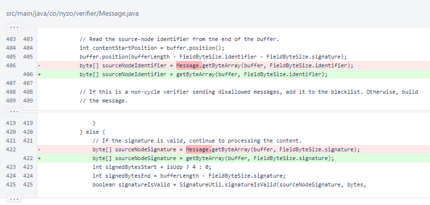
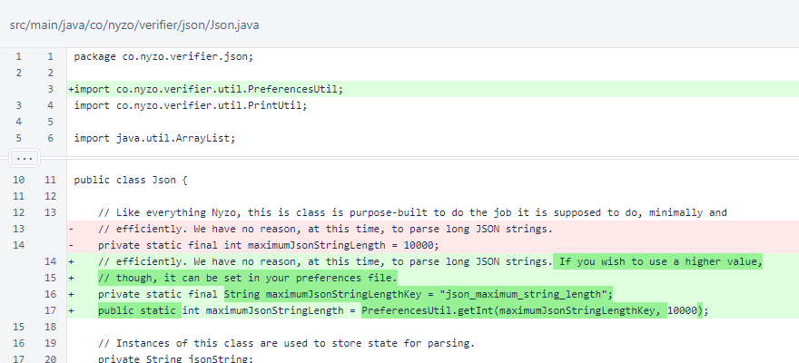
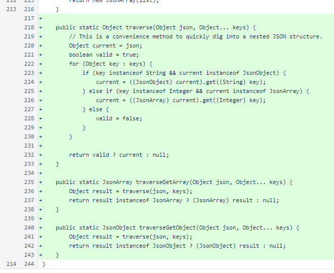
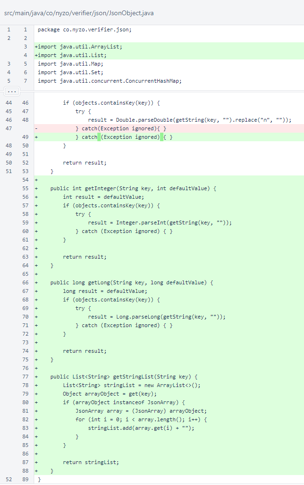

Nyzo version 607 (commit on GitHub) adds some minor improvements, mostly borrowed from the recent Android version.
This version does not affect any run mode in a significant way, though it does change how mistyped Nyzo strings are corrected.
In the Message class, some unnecessary references to the class for the getByteArray() method were removed. This does not change the behavior of the code in any way.
In the Json class, the maximumJsonStringLength value is now modifiable via preferences. This is not necessary for normal operation of any run modes, but it can be helpful when dealing with larger API responses. The particular motivation for this change was an internal script that accessed the qTrade API.
The Json.traverse() method, first released in the Android source, digs into a JSON hierarchy to return a nested object. It's just a shorthand, but it is useful for improving code readability.
The Json.traverseGetArray() method returns the result of Json.traverse() as a JsonArray, and the Json.traverseGetObject() method returns the result as a JsonObject.
In JsonObject, the getInteger(), getLong(), and getStringList() methods, originally published in the Android source, were added.
In NyzoStringEncoder.decode(), at line 70, a different replacement for lowercase "L" (l) is used. Instead of a numerical "1" substitution, uppercase "i" (I) is used, as this is a more common mistake with most fonts. In these notes, the sans-serif font used by most browsers will likely illustrate this well. This change was also first published in the Android source.